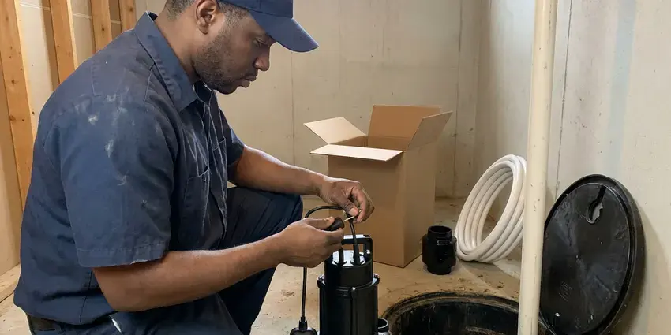
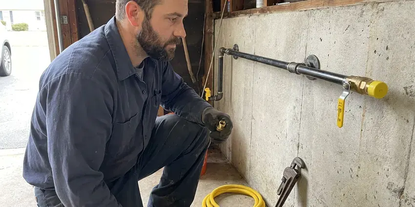

Backflow Preventer Installation in Tanaina, AK
For dependable backflow preventer installation in Tanaina, AK, trust the certified plumbers at CKN Plumbing.
- Fast, Local Service
- Upfront Pricing
- Compliance Paperwork Included
- Residential and Commercial
Expert Backflow Preventer Installation in Tanaina, AK.
Don't compromise on water safety, call us for a professional installation quote today.
Keep Your Water Safe with Backflow Preventer Installation in Tanaina, AK.
CKN Plumbing works with water providers that enforce cross-connection control programs and require annual testing. We install reduced pressure zone assemblies, double check valves and pressure vacuum breakers to manufacturer and code specs, then submit test results so your account stays in good shape.
Our expertise includes:
- Certified backflow prevention specialists.
- Double Check Valve Assembly Installation
- Residential & Commercial Systems

Additional Plumbing Installation Services in Tanaina, AK
We install water heaters, pumps, lines, and fixtures across Tanaina, AK with careful, permitted work that passes inspection the first time.


Sump Pump Installation near Tanaina



Tanaina gas line installation specialists

Customers
Why Choose CKN Plumbing for Backflow Preventer Installation in Tanaina, AK?
Choosing CKN Plumbing for your backflow preventer installation means partnering with experienced professionals dedicated to water safety. We understand the requirements and plumbing codes in Alaska so every installation is done right.
- Property Protection, Preventing backflow protects your entire plumbing system from potential damage and costly repairs caused by contaminated water.
- Water Safety, A backflow preventer keeps contaminated water from flowing back into your clean drinking water supply.
- Hazard Matched, We choose the assembly based on whether the connection is a health hazard or a pollution hazard.
Citywide Coverage
Every part of Tanaina falls under a cross-connection program of some kind, and we know what local providers expect. We install devices that meet those requirements on the first try.
Experienced Team
Our team of licensed plumbers has broad experience installing a wide range of backflow prevention devices. They receive ongoing training to stay updated on the latest technology and local plumbing codes in Alaska.
Safety-First Approach
Backflow preventers protect public health, so we install them to manufacturer orientation, clearance and drainage requirements. RPZ assemblies are installed where relief valve discharge will not flood a building or damage property.
Trusted Certified Tanaina Plumbing Services Professionals
At CKN Plumbing, we take pride in providing licensed, certified plumbing services throughout Tanaina, AK. Backed by recognized industry credentials, our experienced plumbers combine technical skill with genuine customer care. Whether it is repair, installation, or maintenance, we follow strict safety and quality standards to deliver long-lasting results you can trust.
Call Us Now PHCC Plumbing Contractor Recognition
PHCC Plumbing Contractor Recognition Better Business Bureau (BBB) Accreditation
Better Business Bureau (BBB) Accreditation Angi Certified Pro
Angi Certified Pro ISO 9001 Quality Management Certification
ISO 9001 Quality Management CertificationReliable Backflow Preventer Installation Services in Tanaina, AK
Double Check Valve Assembly (DCVA) Installation in Tanaina
The double check valve assembly, or DCVA, is a common backflow preventer for low-hazard applications where the consequences of backflow are not severe. In Tanaina, DCVAs are frequently installed on fire sprinkler systems or irrigation lines. Our certified plumbers precisely install these devices, making sure both check valves operate correctly and are properly sealed to prevent backpressure or back-siphonage into the main water supply.

Residential Backflow Preventer Installation in Tanaina
For homeowners in Tanaina, protecting your family's drinking water is paramount. We install many types of backflow preventers, often required for irrigation systems, fire suppression lines or properties with alternative water sources. Our plumbers will assess your home's plumbing layout to recommend the right device, meeting local health department regulations and protecting your potable water supply. We handle everything from small residential devices to bigger systems.
Backflow Testing and Certification in Tanaina
Most water providers require testable backflow assemblies to be certified at installation and then annually. Our certified testers check each valve's opening point, relief valve operation and differential pressure. If a device fails, we can repair or rebuild it right away with genuine parts. We submit passing results so you avoid compliance letters or service interruption.
Reduced Pressure Zone Assembly Installation in Tanaina, AK
RPZ assemblies offer the highest level of protection and are required for high hazard connections like commercial kitchens, medical facilities, chemical injection and car washes. They include two independent check valves with a relief valve that dumps water if either check fails. Because the relief valve can discharge, we plan for drainage and install the assembly above grade where it can be tested easily. We carry trusted brands like Watts, Febco, Wilkins and Apollo.
Emergency Backflow Preventer Replacement in Tanaina
While installations are usually planned, sometimes an existing backflow preventer fails suddenly, creating an urgent need for replacement in Tanaina. A compromised backflow device can lead to immediate contamination risks or code violations. CKN Plumbing offers emergency replacement service to promptly assess the situation, remove the faulty unit and install a new, code-compliant backflow preventer, restoring your water safety as quickly as possible.
Reduced Pressure Zone (RPZ) Assembly Installation in Tanaina
RPZ assemblies offer the highest level of backflow protection and are commonly required for high-hazard applications in Tanaina. These devices feature two independent check valves and a relief valve that opens to discharge water if pressure differentials indicate a backflow condition. CKN Plumbing focuses on precise RPZ installation, with proper sizing, placement and testing to meet all regulatory requirements for residential and commercial properties. We work with trusted brands like Watts and Febco.
Commercial Backflow Preventer Installation in Tanaina
Restaurants, salons, dental offices and light industrial buildings often need multiple backflow devices on soda machines, boilers, dishwashers and process water. We survey the building, identify each cross-connection and install containment and isolation assemblies as required. Work is scheduled after hours or on weekends when needed to avoid shutting down your business. You receive documentation for each device for your records and your water utility.

Backflow Enclosures and Freeze Protection in Tanaina, AK
Above-ground assemblies sit in direct sun in summer and can freeze on cold nights. Frozen pipes are a serious and regular risk in Alaska, and a single heating failure in deep cold can freeze a home's lines within hours. We install insulated enclosures, freeze blankets or heated cabinets based on your location. Enclosures also discourage theft, since brass backflow assemblies are a common target for scrap thieves. We choose enclosures with enough room for testing and service.
Backflow Preventer Installation Near Me in Tanaina, AK
Our local team works in Tanaina regularly and knows the cross-connection staff and reporting process. That familiarity speeds up approvals and avoids extra visits. You get one call to handle installation, testing and paperwork.
Our team is deeply familiar with the plumbing infrastructure and municipal water requirements throughout Tanaina. This local expertise means we can install your backflow preventer quickly and efficiently, so it works properly and provides lasting protection for your water supply. Do not risk your water safety with just anyone, choose the local pros.
CKN Plumbing at a Glance
- Licensed and insured plumbers serving Tanaina, AK
- Same-day appointments and 24/7 emergency response
- Upfront, flat-rate pricing before work begins
- 4.9-star rated by 309+ Alaska customers
Tanaina Map
Tanaina Information
- Population
- 8,817
- Area codes
- Local
- Service area
- Tanaina and communities within 40 miles
- Nearby
- North Lakes, Wasilla, South Lakes, Meadow Lakes
With so many homes running irrigation systems and other auxiliary water uses, proper backflow prevention is critical for keeping drinking water safe in Tanaina, AK.
Expert Services
Trust our professionals for reliable CKN Plumbing solutions in Tanaina, AK.
Our Specialized Plumbing Services in Tanaina, AK
At CKN Plumbing, we provide a complete range of plumbing services across Tanaina, AK. From leak detection to full system installations, our team ensures fast, precise, and affordable service for both residential and commercial properties. Explore our core services below:


How Our Backflow Preventer Installation Process Works in Tanaina, AK
Our backflow preventer installation process in Tanaina, AK is simple and designed for efficiency and compliance.
Request a Quote
Call (928) 470-9007 and share any notice you received from your water provider. We will confirm the required device type and give you a firm price.
Install the Assembly
We shut off water, install the correct assembly with unions and test cocks, and add an enclosure if needed. Water is restored as quickly as possible.
Test and Certify
A certified tester checks the new device and tags it. We send the results to your water provider and leave you a copy.
Frequently Asked Questions About Backflow Preventer Installation in Tanaina
Residential pressure vacuum breakers typically cost $250 to $700 installed. Double check and RPZ assemblies for larger homes or businesses range from $800 to $3,500 or more depending on size and enclosure needs.
Backflow preventers are often installed as a preventive measure or because code requires them. Signs of possible cross-contamination include discolored or foul-smelling tap water, unexplained drops in water pressure or visible dirty water entering a clean water source, though these often point to broader plumbing issues as well.
An RPZ, or reduced pressure zone device, provides the highest level of protection and is used for high-hazard applications where contaminants could be toxic. A DCVA, or double check valve assembly, is used for low-hazard applications where contaminants are non-toxic. The choice depends on the risk of contamination at the cross-connection point.
Signs of a failing backflow preventer include discolored or foul-smelling water, a noticeable drop in water pressure, visible leaks around the device or water discharging from the relief valve on an RPZ. If you notice any of these, call us for an inspection in Tanaina.
Constant dripping or discharge from an RPZ relief valve, low pressure downstream and a failed annual test are common signs. Visible corrosion or a cracked body from freezing also means service is needed.
You likely need a backflow preventer if you have an irrigation system, a fire sprinkler system, a swimming pool or any auxiliary water source that connects to the main water supply. Local regulations in Tanaina often require these devices for certain applications to protect public health.
Most residential backflow preventer installations can be completed within 2 to 4 hours. More complex commercial installations or those requiring extensive pipe changes might take a full day. We always aim for efficient service with minimal disruption to your water supply.
We install backflow preventers from leading manufacturers known for quality and reliability. Our preferred brands include Watts, Febco, Zurn and Apollo, so you receive a durable, effective device that meets all industry standards.
What People Are Saying About Our Plumbing Experts?

Mark T.
When our office needed drain cleaning, CKN Plumbing provided quick, reliable service. The plumber arrived on time and made sure every drain flowed perfectly before leaving. Very satisfied.
Drain Cleaning · Fishhook, AK
Robert G.
The trenchless sewer replacement saved our front yard. They walked us through the camera inspection footage first so we knew exactly what we were paying for.
Sewer Line Replacement · Fishhook, AK
Laura S.
I scheduled a water heater replacement, and the team made the process smooth and affordable. The new unit works perfectly, and they cleaned up after completing the job.
Water Heater Replacement · Fishhook, AK
Daniel K.
A pipe burst at 11 pm and they actually answered. The plumber showed up within the hour, shut everything down, and had us back to normal the next morning. Could not ask for more.
Emergency Plumbing · North Lakes, AK
Emily R.
I called CKN Plumbing for plumbing repair, and the technician was fast, polite, and thorough. They explained the problem clearly and fixed it the same day. I will definitely hire them again. Highly recommended!
Plumbing Repair · South Lakes, AKJames P.
Our commercial plumbing system had a leak under the sink, and CKN Plumbing handled it professionally. The plumbers arrived quickly and restored everything without disruption to our customers.
Commercial Plumbing · South Lakes, AK